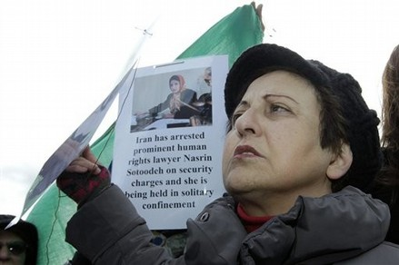

|
|
|
Browsing
Contact Us |
Campaigners |
Face to Face |
Tribune |
Interview |
News |
On the Web |
One Million |
Report
Farsi | Français | German | Italian | Spanish | العربية Also in this section
|
 Shirin Ebadi’s Open Letter to United Nations’ High Commissioner for Human RightsWednesday 12 January 2011 Change for Equality: Shirin Ebadi, Nobel Peace Laureate, asked Navanethem Pillay, United Nations’ High Commissioner for Human Rights to take actions in order to support Nasrin Sotoudeh, Iranian detained lawyer and human rights activist. Ms. Sotoudeh has been Sentenced to 11 years in prison and a 20 year ban from legal practice and travel few days ago. The letter is as follows: Open Letter to the Honourable Mrs Navanethem Pillay, United Nations’ High Commissioner for Human Rights As noted in our earlier communications, my venerable colleague, Mrs Nasrin Sotoudeh, a prominent lawyer who has represented human rights activists for many years on a pro bono basis, was arrested on 4 September 2010 on charges of acting against national security and membership to the Centre for the Defenders of Human Rights. In the early days of her arrest, the Intelligence Ministry official responsible for interrogating her advised Mrs Sotoudeh to appear on state television, confess to the crimes alleged by the prosecutor and appeal for a pardon. Since Mrs Sotoudeh refused to do so, they held her permanently in solitary confinement and deprived her of all the legal privileges accorded to prisoners. Mrs Sotoudeh has two young children of three and 11 years of age. But she has not been allowed even a single private meeting with her children, which is her legal right. Consequently, she has been on hunger strike three times in protest at her illegal predicament. Each time, her condition deteriorated to such an extent that she was admitted to hospital. Yet she would stage yet another strike within a few days. Mrs Sotoudeh’s hunger strikes enraged the judicial and intelligence officials. Hence, instead of observing the law, they filed yet another suit against her. This time she was charged with violating the Islamic dress code (Hejab) in a video clip broadcast in Italy some three years ago. Finally, on 8 January 2010, the court sentenced Mrs Sotoudeh to 11 years in prison, as well as banning her from practicing law and leaving the country for a period of 20-years. The court found Mrs Sotoudeh guilty of acting against national security, spreading propaganda and conspiring against the system, and membership of the Centre for the Defenders of Human Rights. Honourable Mrs Pillay, While your representatives were discussing human rights with Mr Mohammad Javad Larijani and other Iranian officials, one of Iran’s most prominent human rights defenders was languishing in solitary confinement, deprived of all her legal rights. Not only talks with the Iranian government has resulted in such an unjust verdict, the intelligence officials, angered by Mrs Sotoudeh’s resistance, have summoned her husband, Mr Khandan, and her lawyer, Mrs Nasim Ghanavi, to the Revolution Court as defendants. They are under the impression that Mrs Sotoudeh’s fate would serve as a lesson to those who show resistance to the illegal conduct of Intelligence Ministry interrogators. Honourable UN High Commissioner for Human Rights, Mrs Sotoudeh’s release would only be possible if she is given a just trial. And access to this inalienable right would not be possible without international support. Therefore, I once again urge you to take whatever action necessary to enable your Iranian colleague to have access to a fair trial. I would also like to ask you to kindly register this letter in the dossier of the Iranian government. With Best Regards, Dr. Shirin Ebadi, Human Rights Advocate and 2003 Nobel Laureate cc: The Office of the Honourable Mr Ban Ki-moon, United Nations’ Secretary-General (FIY) The Honourable UN Special Rapporteur on the Independence of judges and lawyers The Honourable UN Special Rapporteur on the situation of Human Rights Defenders (For appropriate action) The International Bar Association (For appropriate action and contact with Iran’s Judiciary authorities and Bar Association) |